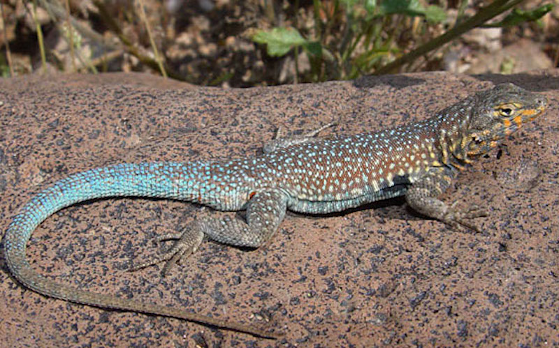

Reptiles
Reptiles are a perfect match for southern Californias excessively sunny climate. Because they are cold blooded, they depend on the warth of the sun to give them the energy they need to look for food, make a home, and potentially escape from predators. Reptiles are plentiful in the arroyo, especially lizards. There are many kind of lizards in the arroyo, including blue belly's, alligator lizards, and skinks. Reptiles are also great because they eat mosquitos before they can infect us with west nile virus.

Western Fence Lizard
Sceleporous occidentalis biseriatus
Known for it's signature blue belly, the western fence lizard is by far the most common reptile throughout the region. It eats insects and gets eaten by birds.

Side Blotched Lizard
Uta stansburiana

San Diego Alligator Lizard
Elgaria multicarinatus webbi

Coastal Western Whiptail
Cnemidophorus tigris multiscutatus

California striped racer
Masticophis lateralis lateralis

San Diego Gopher Snake
Pitouphis melanoleucus annectens

California red-sided gartersnake
Thamnophis sirtalis infernalis